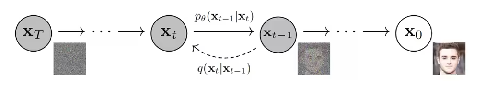

Denoising Diffusion Implicit Models (DDIM) 阅读笔记
约 1599 个字 38 行代码 6 张图片 预计阅读时间 11 分钟
论文解读精选
总述
本文
核心概念
扩散模型的基本思想
扩散模型是一种受非平衡热力学启发的潜变量模型。其基本思想是通过两个过程：
- 前向过程（扩散过程）：逐步向数据添加噪声
- 反向过程（去噪过程）：学习如何从噪声中恢复数据

前向过程详解
前向过程（扩散过程）
-
给定初始数据分布 \(x_0 \sim q(x)\)，可以不断地向分布中添加高斯噪声。该噪声的标准差由固定值 \(\beta_t\) 确定，均值由固定值 \(\beta_t\) 和当前时刻 \(t\) 的数据 \(x_t\) 决定。此过程是一个马尔可夫链过程。
-
随着 \(t\) 的不断增大，最终数据分布 \(x_T\) 会逐渐变为一个各向同性的高斯分布（各向独立的高斯分布）。

- \(x_0\): 原始数据（如图像）
- \(x_t\): 第t步的噪声数据
- \(\beta_t\): 噪声调度参数，控制每一步添加的噪声量
- \(\mathcal{N}\): 高斯分布
- \(I\): 单位矩阵
任意时刻t的分布可以直接计算(采用了重参数化的技巧)：\(q(x_t|x_0) = \mathcal{N}(x_t; \sqrt{\bar{\alpha}_t}x_0, (1-\bar{\alpha}_t)I)\)
其中
\(\alpha_t = 1-\beta_t\), \(\bar{\alpha}_t = \prod_{s=1}^t \alpha_s\)

数学推导详解
前向过程的关键是可以重参数化为：
其中\(\epsilon \sim \mathcal{N}(0, I)\)是标准高斯噪声。
这种表示方式使得我们可以在任意时间步t直接从\(x_0\)采样\(x_t\)，无需逐步添加噪声。
通过贝叶斯定理和马尔可夫链性质，可以推导出：
其中：
- \(\tilde{\mu}_t(x_t, x_0) = \frac{\sqrt{\bar{\alpha}_{t-1}}\beta_t}{1-\bar{\alpha}_t}x_0 + \frac{\sqrt{\alpha_t}(1-\bar{\alpha}_{t-1})}{1-\bar{\alpha}_t}x_t\)
- \(\tilde{\beta}_t = \frac{1-\bar{\alpha}_{t-1}}{1-\bar{\alpha}_t}\beta_t\)
通过进一步推导，上述均值可以重写为：
其中\(\epsilon_t\)是添加到\(x_0\)的噪声。这表明我们可以通过预测噪声\(\epsilon_t\)来生成逆向过程。
反向过程详解
反向过程（去噪过程）
逆过程是从高斯噪声中恢复原始数据，我们可以假设它也是一个高斯分布，但是无法逐步地去拟合分布，所以需要构建一个参数分布来去做估计。逆扩散过程仍然是一个马尔科夫链过程。

- \(\theta\): 神经网络参数
- \(\mu_\theta\): 神经网络预测的均值
- \(\Sigma_\theta\): 神经网络预测的方差
- \(p(x_T)\): 标准高斯分布
- 预测噪声比预测均值效果更好
- 方差可以固定为\(\beta_t\)或\(\tilde{\beta}_t\)
- 使用简化的训练目标可以获得更好的样本质量
训练目标详解
目标数据分布的似然函数
在负对数似然函数的基础上加上一个KL散度项，就构成了负对数似然函数的上界，上界越小，负对数似然函数越小，对数似然函数就越大。
 进一步可以写出交叉熵的上界，并对交叉熵的上界进行化简：
进一步可以写出交叉熵的上界，并对交叉熵的上界进行化简：

ELBO可以重写为：
其中：
- \(L_T = D_{KL}(q(x_T|x_0) \| p(x_T))\)
- \(L_{t-1} = D_{KL}(q(x_{t-1}|x_t,x_0) \| p_\theta(x_{t-1}|x_t))\)
- \(L_0 = -\log p_\theta(x_0|x_1)\)
作者发现使用简化的训练目标可以获得更好的样本质量：
采样算法详解
在DDPM中，完整的采样过程如下：
def sample(model, shape):
# 从标准正态分布采样初始噪声
x_T = torch.randn(shape)
x_t = x_T
# 反向去噪过程
for t in reversed(range(1, T+1)):
# 预测噪声
epsilon = model(x_t, t)
# 计算均值
alpha_t = 1 - beta[t]
alpha_bar_t = alpha_bar[t]
# 计算均值和方差
mean = (1 / math.sqrt(alpha_t)) * (x_t - (beta[t] / math.sqrt(1 - alpha_bar_t)) * epsilon)
var = beta[t]
# 添加采样噪声（在t=1时不添加噪声）
z = torch.randn_like(x_t) if t > 1 else 0
x_t_minus_1 = mean + math.sqrt(var) * z
x_t = x_t_minus_1
return x_0
关键步骤：
- 从标准正态分布采样初始状态\(x_T\)
- 逐步应用学习到的反向过程
- 通过预测噪声来计算均值和方差
- 采样下一个状态，直到生成\(x_0\)
DDPM的改进
加速采样
标准DDPM需要1000步采样，计算量大。改进方法包括：
- DDIM (Denoising Diffusion Implicit Model)：通过确定性采样和跳跃步骤减少采样次数
- 预测器-校正器方法：结合ODE和SDE方法提高采样效率
- 知识蒸馏：训练更小的模型快速生成样本
条件生成
DDPM可以扩展为条件生成模型：
- 分类器引导采样：使用分类器梯度指导扩散过程
- 文本引导扩散：通过文本条件控制图像生成方向
- 结构驱动生成：通过结构信息（如分割图、草图）控制生成结果
总结
DDPM扩散概率模型的思想来源是非平衡热力学，通过逐步添加噪声来生成图像。前向过程是一个马尔科夫链，且通过重参数化等推导，使得可以直接用\(x_0\)对任意的时间步\(x_t\)进行采样。而反向过程也定义为一个马尔科夫链，用神经网络来拟合真实的后验分布，通过变分法得到优化目标，并通过重参数化来化简优化目标。DDPM的训练目标是最大化ELBO，并通过简化的训练目标来提高采样效率。 但DDPM存在的限制为：要求过程为马尔科夫链，所以很缓慢，且无法处理非马尔科夫链的模型。
- 样本质量高
- 训练稳定
- 实现简单
- 可解释性强
| 模型类型 | 优势 | 劣势 |
|---|---|---|
| GAN | 快速采样，高质量样本 | 训练不稳定，模式崩溃 |
| VAE | 易于训练，良好的表示 | 样本质量较低 |
| 自回归 | 高精度细节 | 采样慢，序列依赖 |
| 流模型 | 精确似然，可逆 | 架构受限，计算复杂 |
| DDPM | 高质量样本，稳定训练 | 采样慢，计算密集 |